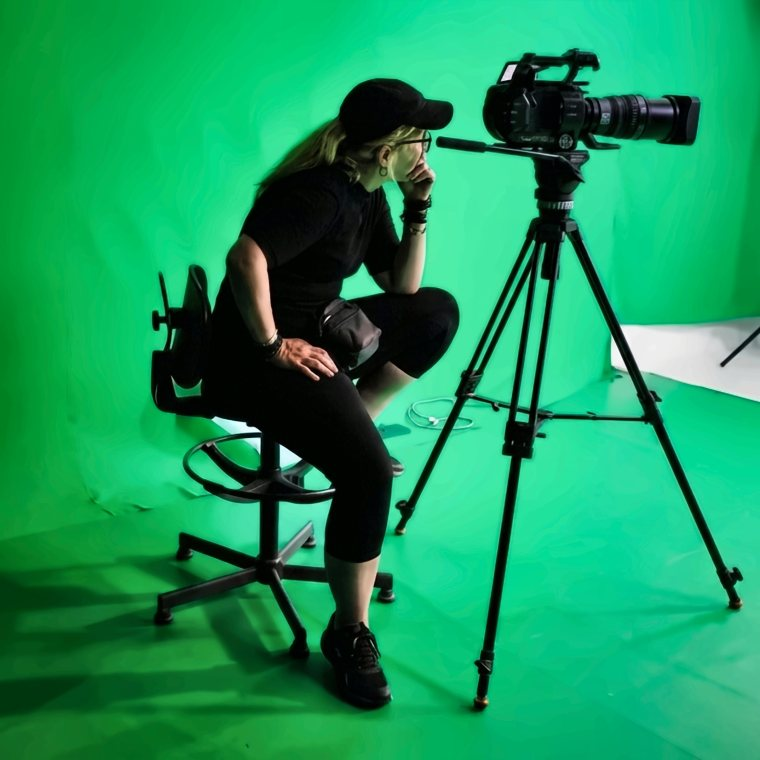
Del concepto
al color final.
From concept
to final color.
Cine documental, música y marca. Co-fundadora de La Rueda Films · 1.000+ proyectos para clientes de Reino Unido, EE. UU., Italia, Francia y España. La Habana → Ciudad Real → el mundo.
Documentary film, music and brand work. Co-founder of La Rueda Films · 1,000+ projects for clients across the UK, USA, Italy, France and Spain. Havana → Ciudad Real → worldwide.
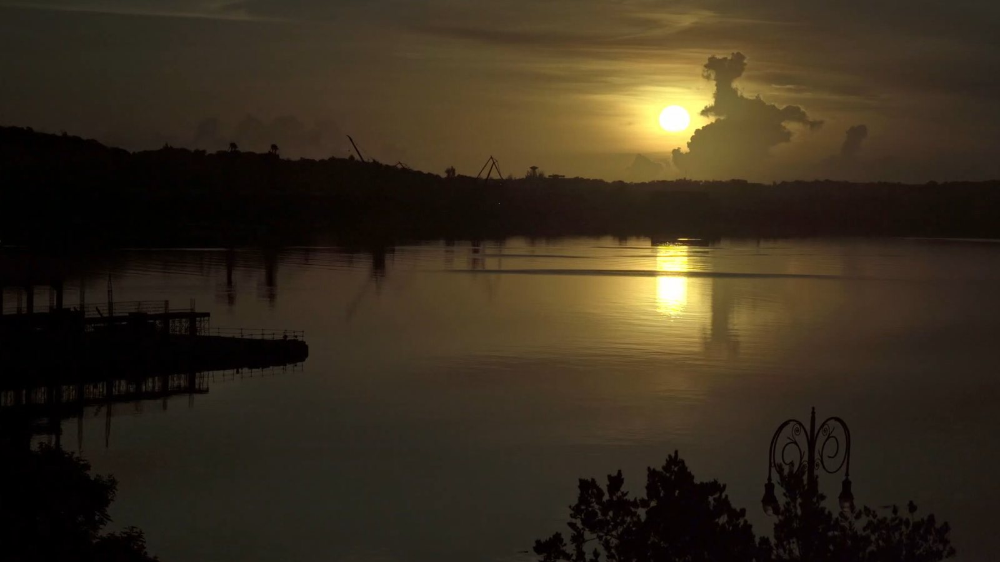
Naturaleza, identidad y música
respirando en una misma alma.
Nature, identity and music
breathing in one soul.
Catorce líneas de trabajo en cuatro bloques, cada una con su propio reel. Salta directo a lo que te interesa.Todos los reels y piezas de mi portafolio fueron editados por mí.
Fourteen lines of work in four blocks, each with its own reel. Jump straight to what interests you.All reels and pieces in my portfolio were edited by me.
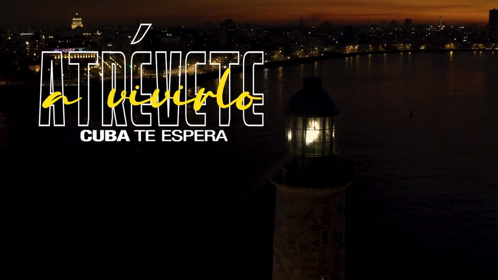
REEL 01Campañas para Havanatur, Havana Club, Iberostar, Gran Retto y Art Music Group.
Campaigns for Havanatur, Havana Club, Iberostar, Gran Retto and Art Music Group.
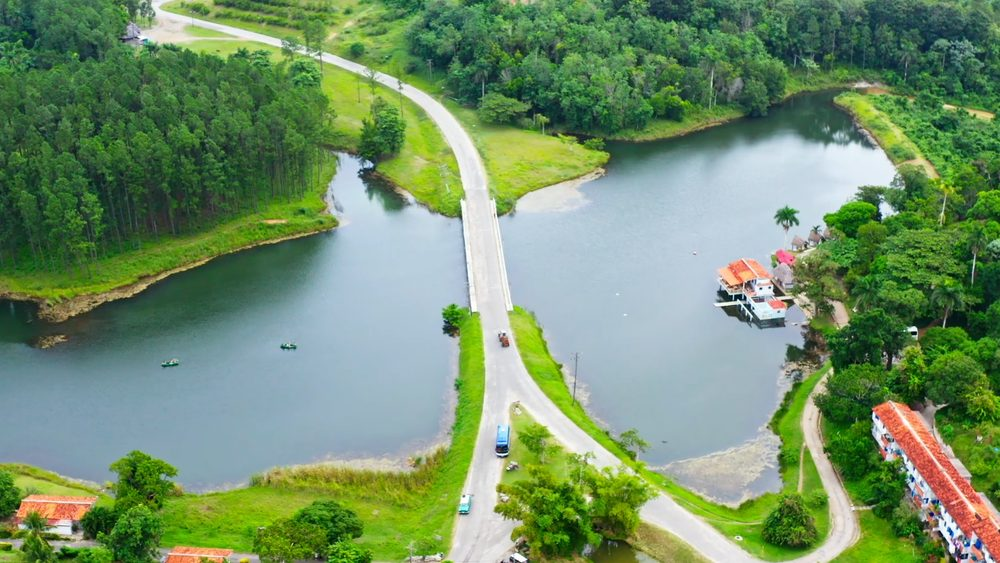
REEL 02Reels y vídeos de destino: cultura, paisaje, arquitectura y experiencias.
Destination reels and films: culture, landscape, architecture and experiences.
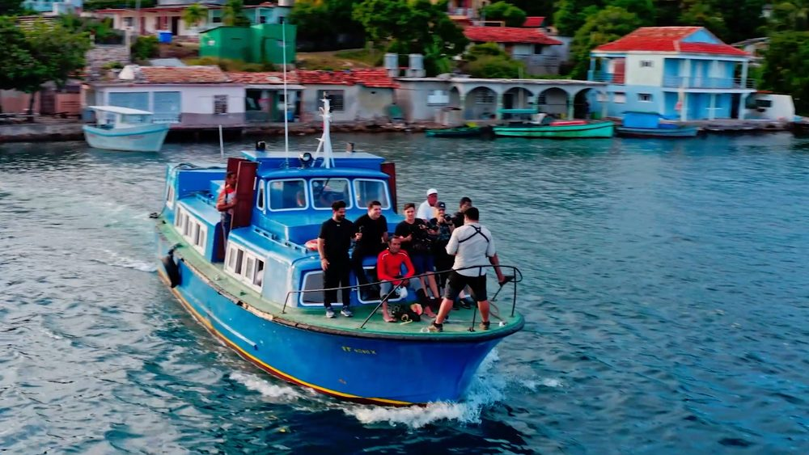
REEL 03Reality, series musicales de televisión y documentales. Clientes como BBC y UNESCO.
Reality TV, TV music series and documentaries. Clients including BBC and UNESCO.
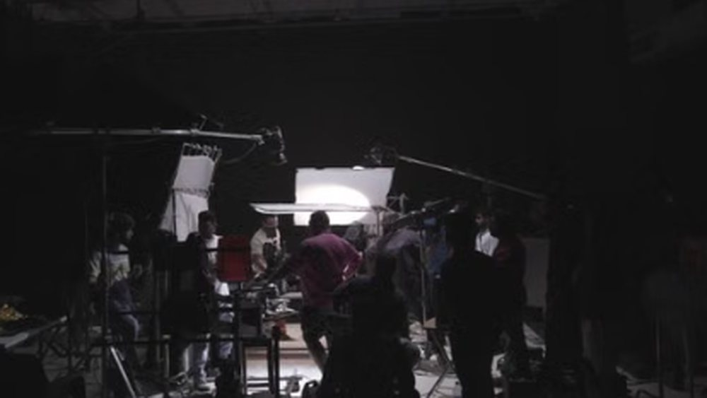
REEL 04Cómo se hace: rodaje, equipo y set en marcha, del primer plano de cámara al montaje.
How it gets made: shoot, crew and set in motion, from first camera setup to the edit.
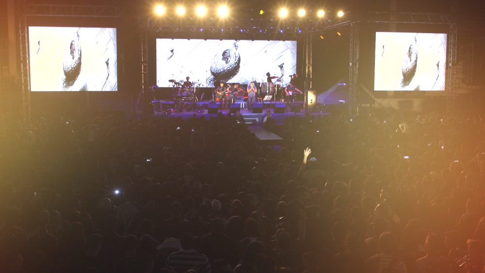
REEL 05Conciertos y festivales en vivo a varias cámaras.
Multi-camera live concerts and festivals.
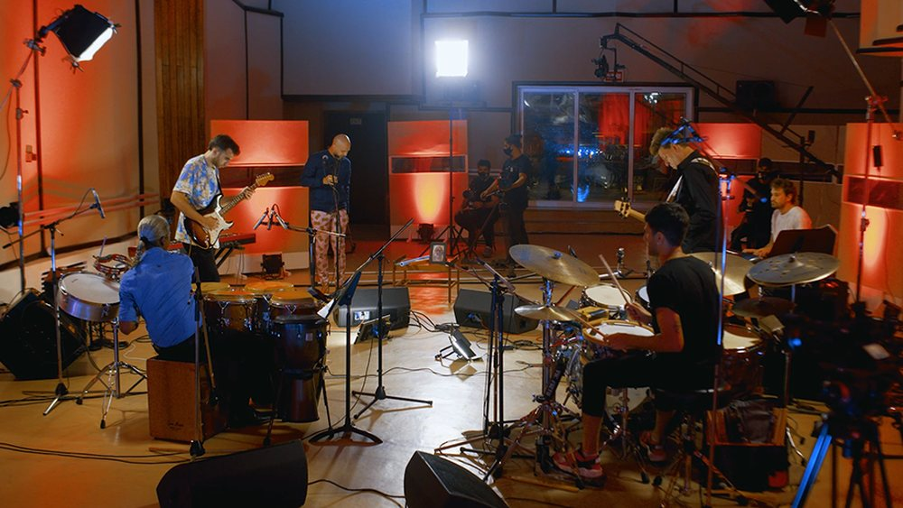
REEL 06Directos grabados en estudio: la energía del concierto con control total de luz y sonido.
Live sets recorded in studio: concert energy with full control of light and sound.
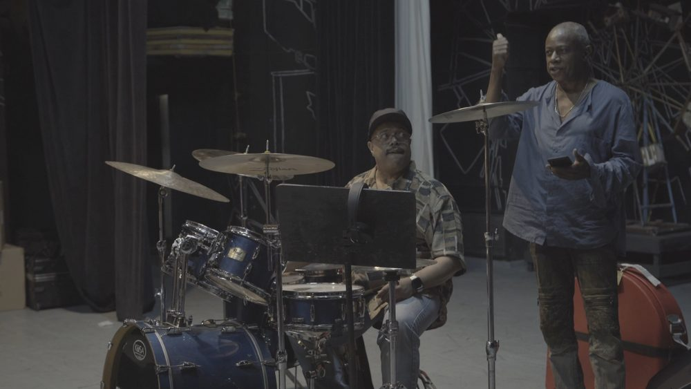
REEL 07Grabaciones en estudio con músicos de primer nivel.
Studio recording sessions with world-class musicians.
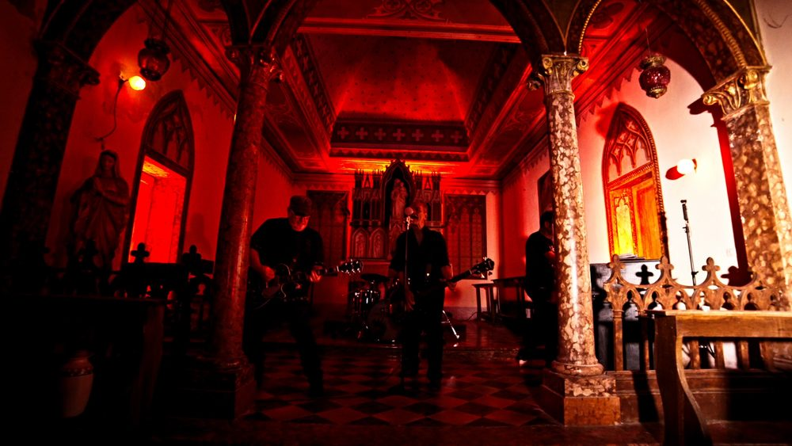
REEL 08Videoclips para artistas nacionales e internacionales, de Frigidaire Tango y Stewie DC a grandes nombres de la música cubana.
Music videos for national and international artists, from Frigidaire Tango and Stewie DC to major names in Cuban music.
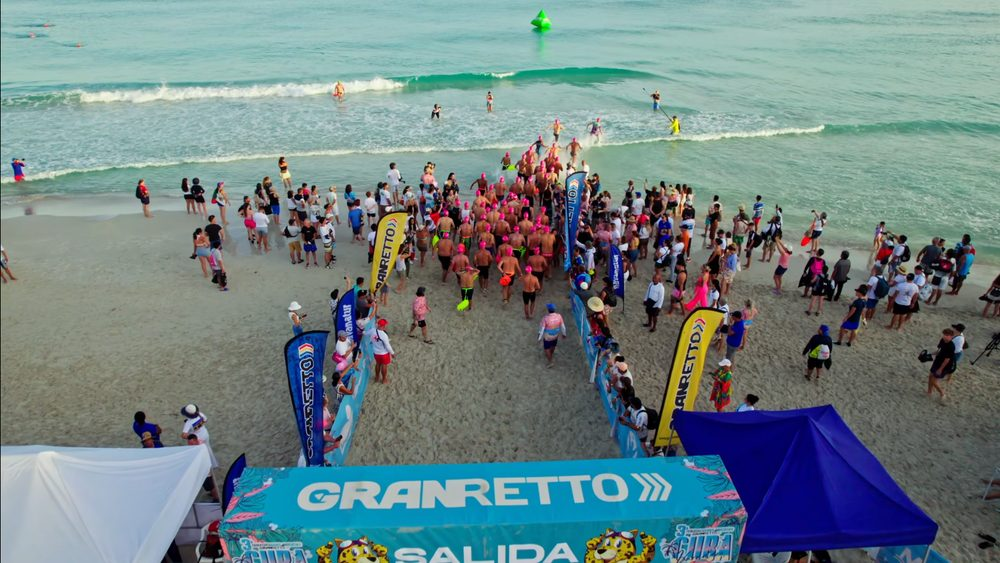
REEL 09Cobertura y memoria audiovisual de competiciones y eventos deportivos.
Coverage and event films for competitions and sporting events.
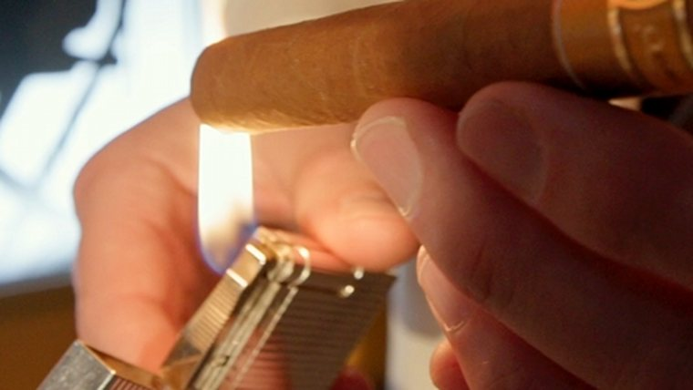
REEL 10Festivales, galas y encuentros culturales — Festival de Cine de Gibara, Eyeife, Festival del Habano.
Festivals, galas and cultural gatherings — Gibara Film Festival, Eyeife, the Habano Festival.
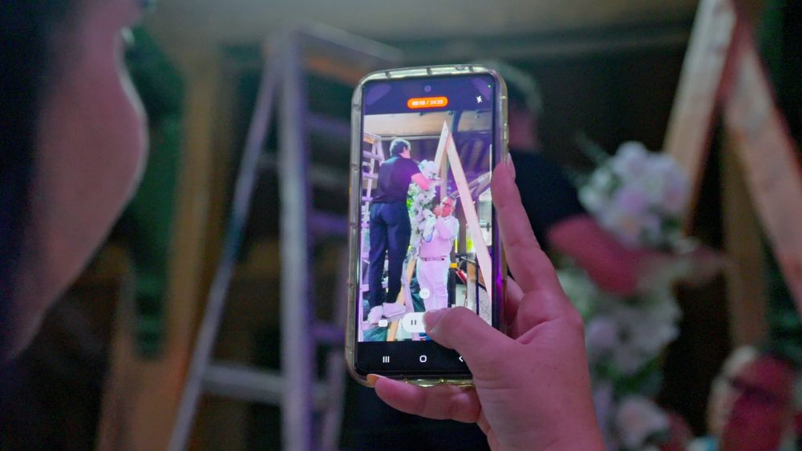
REEL 11Congresos, presentaciones y memorias corporativas, del resumen para redes al vídeo institucional.
Conferences, launches and corporate event films, from social cut-downs to institutional video.
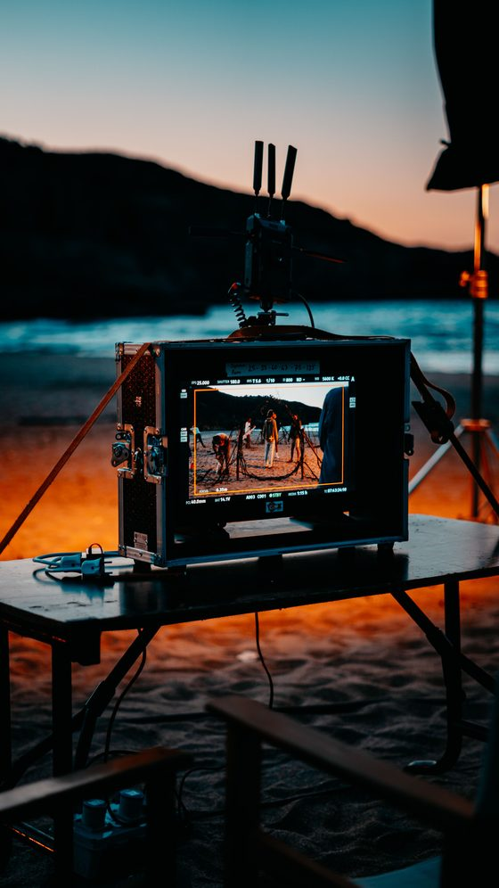
9:16 REEL 12Making-of y proceso creativo: el equipo, el set y lo que no se ve en el corte final.
Making-of and creative process: the crew, the set and what never reaches the final cut.
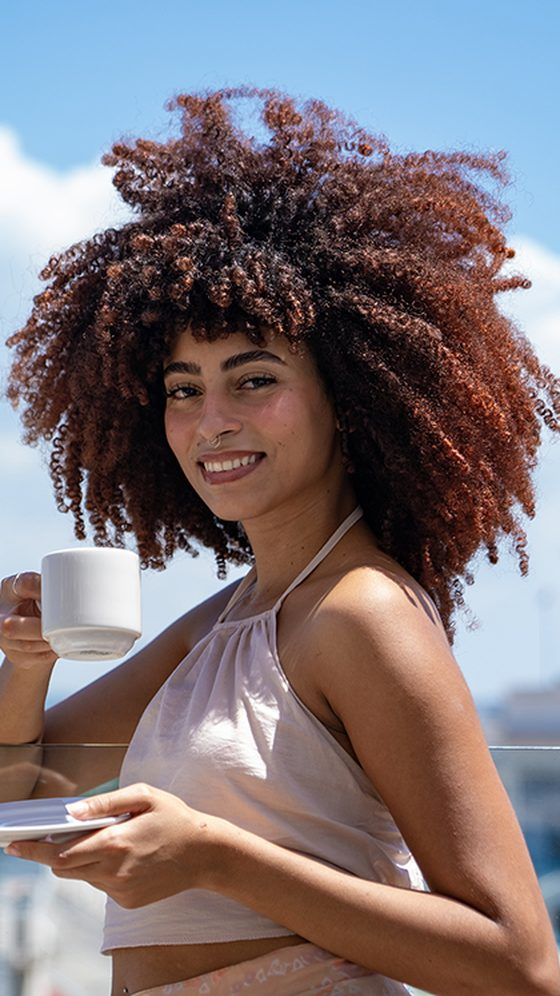
9:16 REEL 13Piezas cortas para redes: campaña, producto y destino.
Short-form for social: campaign, product and destination.
Momentos de concierto y estudio para Reels y Shorts.
Concert and studio moments for Reels and Shorts.
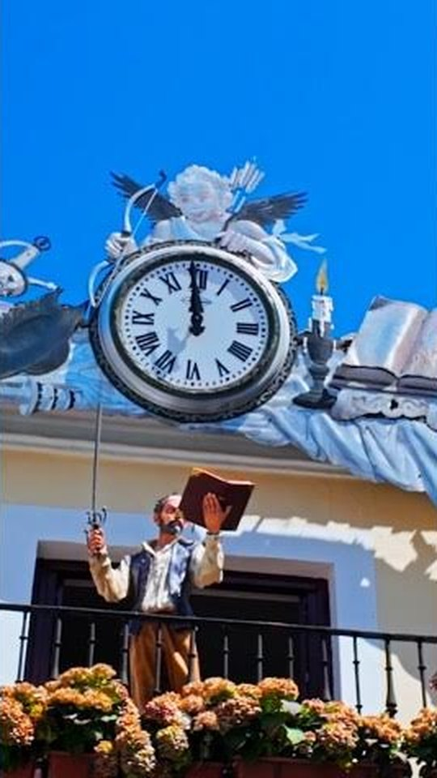
9:16 REEL 15La ciudad que late a través de sus calles e historia.
The city that pulses through its streets and history.
Siete encargos que resumen quince años: documental de autor, marca, televisión y música.
Seven commissions that sum up fifteen years: auteur documentary, brand, television and music.
Series documentales de lujo sobre el habano y la arquitectura de La Habana, cada una con varios capítulos, con acabado cinematográfico para una audiencia internacional premium, además de cortes para redes y reels de forma continua.
Luxury documentary series on Cuban cigars and Havana architecture, each with several chapters, finished to cinema standard for a premium international audience, plus social cuts and ongoing reels for their channels.
Alianza institucional de cuatro años como realizadora principal y jefa de equipo: más de 300 piezas —anuncios, spots, reels turísticos, campañas de verano, Gran Retto y vídeos corporativos—, de las localizaciones y el concepto al rodaje, montaje y entrega para redes, web y TV.
A four-year institutional partnership as lead filmmaker and team lead: 300+ pieces —ads, spots, tourism reels, summer campaigns, Gran Retto and corporate videos— from locations and concept to shooting, editing and delivery for social, web and TV.
Con Omara Portuondo, Orquesta Aragón, Elíades Ochoa y Frank Fernández.
Featuring Omara Portuondo, Orquesta Aragón, Elíades Ochoa and Frank Fernández.
34 programas junto al chef español Miguel Ángel Jiménez “Chefarádula”.
34 episodes alongside Spanish chef Miguel Ángel Jiménez “Chefarádula”.
Dirección de fotografía junto a Quincy Jones, Marcus Miller, Esperanza Spalding y Richard Bona, para el Herbie Hancock Institute.
Cinematography alongside Quincy Jones, Marcus Miller, Esperanza Spalding and Richard Bona, for the Herbie Hancock Institute.
Cámara B y producción de campo en un documental de autor para la BBC, combinando logística de producción y departamento de cámara.
B-camera and field production on an auteur documentary for the BBC, combining production logistics with camera-department duties.
Storytelling visual para Frigidaire Tango y Stewie DC, de la concepción al rodaje y el montaje final. También estrategia de contenido social y proyectos web para Art Music Studio y Art Music Group.
Visual storytelling for Frigidaire Tango and Stewie DC, from conception to filming to final edit. Also social content strategy and website projects for Art Music Studio and Art Music Group.
Buena parte de mi trabajo ocurre después del rodaje: monto y etalono mi propio material y otros proyectos (documentales, anuncios, podcasts, vídeos de YouTube, reels, making of y detrás de cámaras) y entrego en 16:9, 9:16 y 1:1, con subtítulos en español e inglés.
A large part of my work happens after the shoot: I edit and grade my own footage and other projects (documentaries, ads, podcasts, YouTube videos, reels, making-of and BTS) and deliver in 16:9, 9:16 and 1:1, with subtitles in Spanish and English.
Sincronización y corte de conciertos, realities y directos a varias cámaras — de 34 a 570+ programas por serie.
Sync and cutting for concerts, reality shows and live multi-camera events — from 34 to 570+ episodes per series.
DaVinci Resolve Studio: look de marca, coherencia entre cámaras y acabado de cine. Premio Caracol a la mejor fotografía.
DaVinci Resolve Studio: brand look, camera matching and a cinema finish. Caracol Award for Best Cinematography.
After Effects: gráficos, títulos y rotulación; subtitulado y versiones por idioma y por formato.
After Effects: graphics, titles and lower thirds; subtitling and versioning by language and by format.
Máscaras inteligentes, aislamiento de voz, relleno generativo y transcripción — con el criterio artístico al mando.
Smart masking, voice isolation, generative fill and transcription — with artistic judgment in charge.
Licenciada en Ciencias de la Computación: la mirada artística se apoya en una base técnica real.
With a Computer Science degree, the artistic eye rests on a real technical foundation.
Últimos proyectos web · diseñando sitios desde 2001Latest web projects · designing websites since 2001
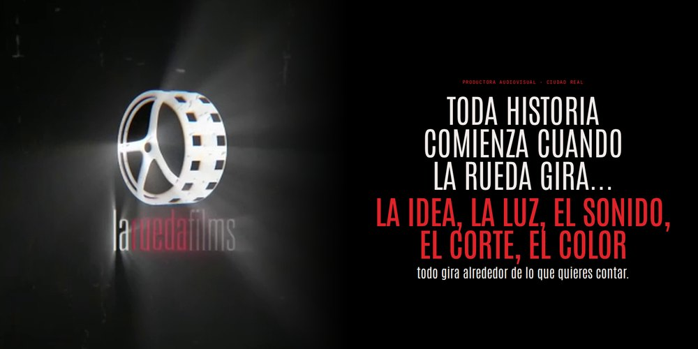
Web bilingüe de nuestra productora en Ciudad Real: identidad, diseño, código y textos, publicada en laruedafilmsproductions.com.
Bilingual website for our production company in Ciudad Real: identity, design, code and copy, live at laruedafilmsproductions.com.
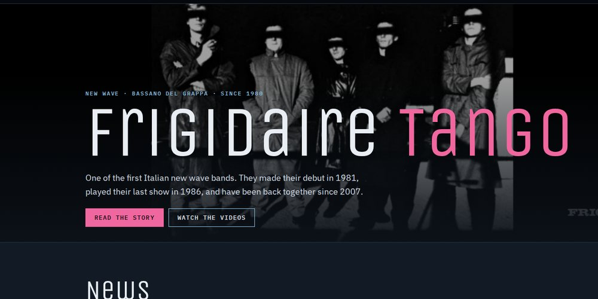
Proyecto en curso: web para la banda new wave de Bassano del Grappa, con nuevo disco, historia, discografía, vídeos y prensa.
Working project: website for the Bassano del Grappa new wave band, with new album, story, discography, videos and press.
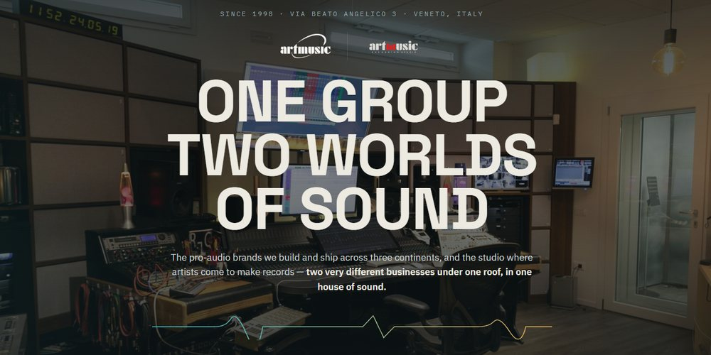
Proyecto en curso: web para el grupo de Bassano del Grappa (Véneto, Italia). También sitios completos en WordPress y Wix.
Working project: website for the Bassano del Grappa group (Veneto, Italy). Also complete sites on WordPress and Wix.
Interfaces y prototipos en Figma y Canva; diseño gráfico en Illustrator y CorelDRAW. Traducir la marca en experiencias funcionales.
Interfaces and prototypes in Figma and Canva; graphic design in Illustrator and CorelDRAW. Turning brand into functional experiences.
Análisis de métricas con Power BI y Python; IA generativa integrada en imagen, vídeo y postproducción, con el criterio artístico al mando.
Metrics analysis with Power BI and Python; generative AI woven into image, video and post-production — with artistic judgment in charge.
Soy realizadora, directora de fotografía y editora con más de 15 años dando forma a documentales, publicidad de lujo, música y televisión en mercados internacionales. Domino el flujo completo — del concepto y el rodaje multicámara al montaje y el etalonaje.
Formada en Ciencias de la Computación, sumo a la parte artística una mirada técnica: diseño web, UI/UX y decisiones basadas en datos. Ahora, desde Ciudad Real, para proyectos en toda España y postproducción remota internacional.
Calidad de cine con estrategia de marketing: pienso dónde se va a ver cada pieza, a quién tiene que llegar y qué tiene que conseguir, y la entrego en formatos para cada plataforma, para que la marca aparezca en redes, en Google y en las respuestas de la IA.
I am a filmmaker, director of photography and editor with over 15 years shaping documentaries, luxury advertising, music and television for international markets. I own the full workflow — from concept and multi-camera shooting to editing and color grading.
Trained in Computer Science, I add a technical eye to the artistic side: web design, UI/UX and data-driven decisions. Now based in Ciudad Real, working across Spain and on international remote post-production.
Cinema quality with a marketing strategy: I think about where each piece will be seen, who it needs to reach and what it should achieve, and deliver it in formats for every platform, so the brand shows up on social media, on Google and in AI answers.